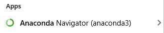
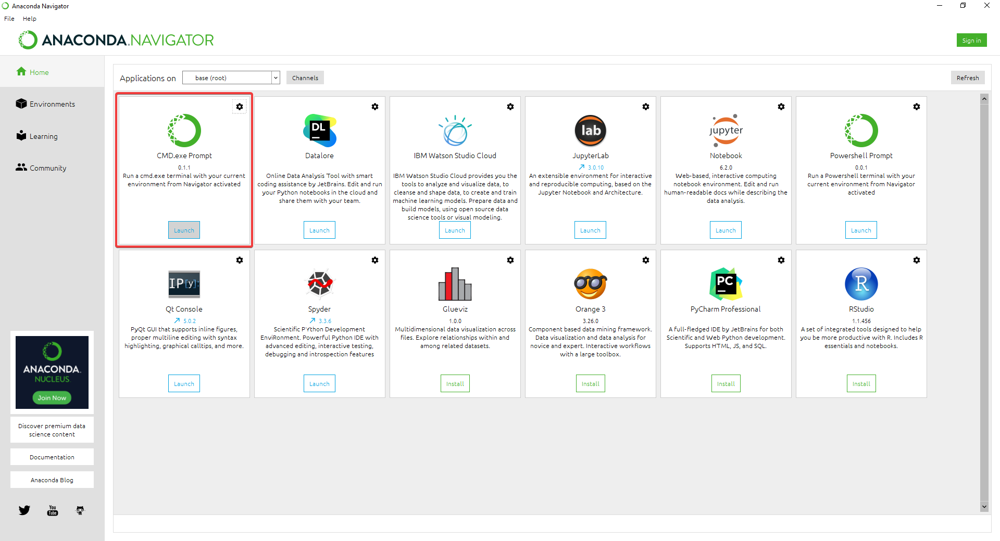
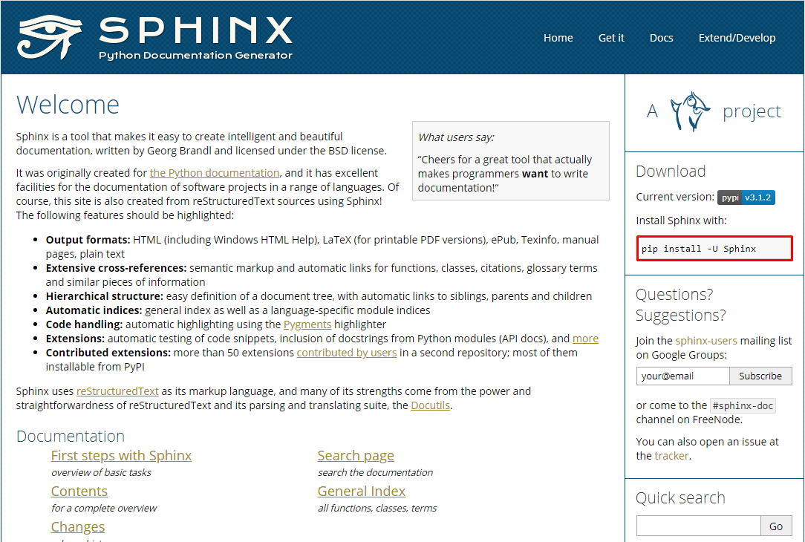
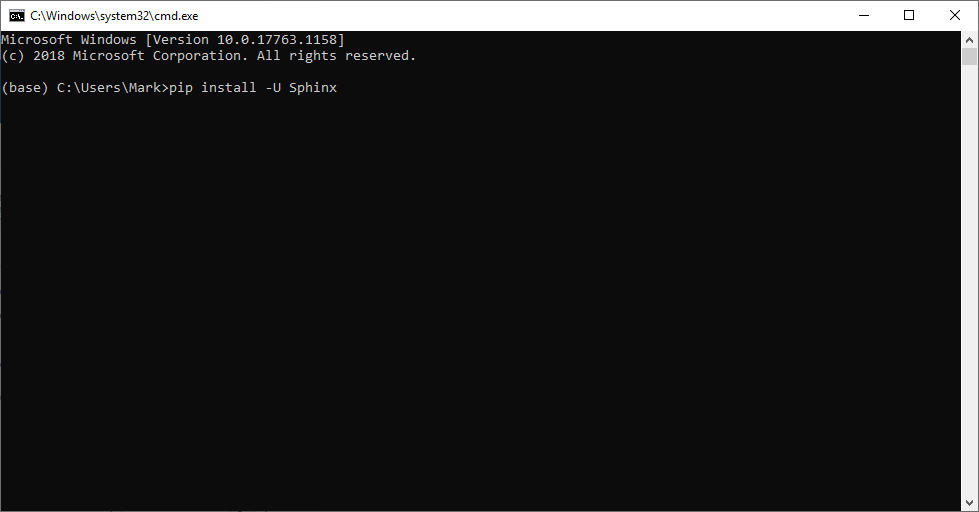

Installing Sphinx¶
Sphinx is a documentation generator, it translates plain text into diferent formats, it can produce references, indices, links and much more. We are going to use it to write our documents in reStucturedText to generate HTML files that will give our documentation a professional look.
Open Anaconda Navigator app
Open the CMD.exe Prompt to open up a terminal
Attention
It is important that you open the terminal using Anaconda navigator, because we need the python environment.
Go to Sphinx Web page and locate in the top right corner the installation command. Alternatively, copy it from here. Sphinx is built in python so it is installed as a python library.
pip install -U Sphinx
In the recently opend terminal paste the above command to install Sphinx. Press enter and let it run, once it is finished, installation will be completed.
